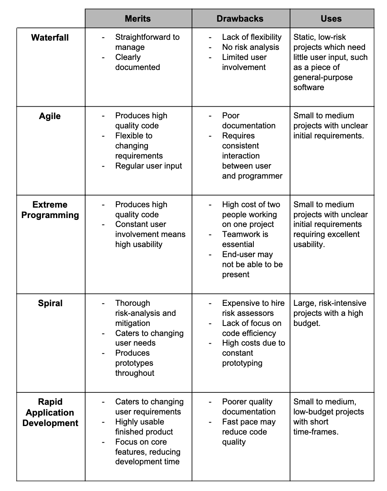

Software Development
There are multiple methods of software development but all share these common stages.
-
Analysis – stakeholders define their problem and state their requirements.
This information is then analysed and researched
-
Design – aspects of the solution are designed including inputs, outputs, security features,
hardware set-ups and user interfaces
-
Development – the design is split up into modules and assigned to developers
-
Testing – the program is tested using various methods
- Alpha testing – in house bug testing
- Beta testing – carried out from the end users, feedback is used further for development
- White box testing – dev teams test all possible states of the program
- Black box testing – the program is tested without the testers knowing the internal structure of the program
-
Implementation — the program is shipped to the end-users
-
Evaluation – the effectiveness of the software is evaluated against the requirements defined in analysis
-
Maintenance – any errors reported by users are fixed, and updates are developed
Waterfall lifecycle
This methodology is straightforward and well-defined.
It is based on the series of stages defined above where each stage is done in order.
Agile methodologies
Agile methodologies are designed to adapt to changes in the requirements of a project.
This usually involves building a prototype, gathering user feedback and then building a new prototype.
The cycle repeats until the end user is satisfied with the software.
Extreme programming
This is an agile model where the development team consists of pair programmers as well as a representative end user.
During paired programming, one codes while the other critiques, so the code is improved as it is written.
Spiral model
The spiral model is built on four main stages with the aim being on managing risk-heavy projects.
- Analysing the system requirements
- Determining and mitigating risks
- Development and testing
- Evaluating to inform the next iteration
Rapid application development (RAD)
Similar to Agile, RAD makes use of prototyping and user feedback.
Often, incomplete prototypes are shown to users. Feedback is used to generate the next, improved prototype.
RAD is typically used to develop projects under time pressure or with short deadlines.
Merits, drawbacks and uses
